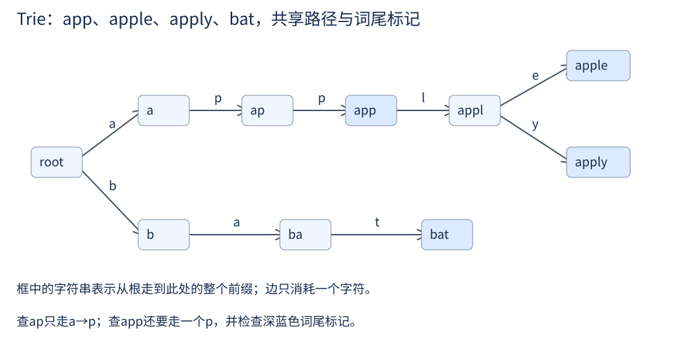

第 13 讲 · Trie 与前缀结构¶
阅读起点：第 3 讲：字典；第 11 讲：树路径；通配符和网格部分需递归。
首读范围：先掌握 insert/search/startsWith；网格找词等第 15 讲后再回读。
Trie 出自一条很朴素的思路：索引结构应该匹配查询的形状。哈希表擅长"这个键在不在"，因为它把整个键压成一个数；可一旦查询变成“是否有词以 app 开头”，普通字典没有直接的前缀查询接口；仍可扫描原键，或另建前缀索引，只是查询与存储成本会变化。
一个“正确但浪费”的做法¶
先明确要实现的三个操作：insert(w) 把完整单词 w 加入词典；search(w) 问 w 是否就是已插入的完整单词；startsWith(p) 问是否有单词以 p 开头。例如只插入 apple 后，search(apple) 为 True，search(app) 为 False，而 startsWith(app) 为 True。前缀必须从第一个字符开始，不能跳字符，pp 不是 apple 的前缀。
一种直接实现是把完整单词和它的所有前缀分别存进两个哈希集合：
class PrefixSet:
def __init__(self):
self.words, self.prefixes = set(), set()
def insert(self, w):
self.words.add(w)
for i in range(len(w) + 1):
self.prefixes.add(w[:i])
def search(self, w): return w in self.words
def startsWith(self, p): return p in self.prefixes
在这份 Python 实现中，insert 生成 w[:i] 并首次哈希，要处理 \(1+2+\cdots +L=\Theta (L^{2})\) 个字符。完整词查询与前缀查询期望 \(\mathcal{O}(L)\)，因为要计算查询字符串的哈希。集合会去重相同前缀，"apple" 与 "apply" 的 "app" 只存一次；浪费来自 "a"、"ap"、"app" 等不同字符串各自复制了开头字符。
让共享前缀在物理上共享¶

把 "app" 的三个字符放在三个节点上，让 "apple" 和 "apply" 的路径在 "app" 之后才分叉：
每个不同的非空前缀对应一个节点，根对应空前缀，因此节点数至多总字符数S加1，未必恰与S同阶（重复插入同一词不会新增节点）。一次查长L的串最多走L条边，缺少某字符时可提前失败；字典孩子查找按期望\(\mathcal{O}(1)\)计，总查询期望\(\mathcal{O}(L)\)。图和文本均用 app、apple、apply、bat。
路径存在，为什么还要标记词尾¶
插入 "app" 之后，"ap" 也是一条存在的路径，但它不是一个词。所以每个节点要额外记一个标记，说明"从根到这里正好构成一个完整的词"。
这个布尔标记就是 search 与 startsWith 的全部区别：
| 操作 | 要看什么 |
|---|---|
search(w) |
路径存在 且 末节点 is_end 为真 |
startsWith(p) |
只要路径存在 |
class TrieNode:
def __init__(self):
self.children = {} # 字符 -> TrieNode
self.is_end = False
self.word = None # 网格找词时存完整单词
class Trie:
def __init__(self):
self.root = TrieNode()
def insert(self, word):
node = self.root
for c in word:
if c not in node.children:
node.children[c] = TrieNode()
node = node.children[c]
node.is_end = True # 只在最后一个节点打标记
def _walk(self, s):
node = self.root
for c in s:
if c not in node.children:
return None
node = node.children[c]
return node
def search(self, word):
node = self._walk(word)
return node is not None and node.is_end
def startsWith(self, prefix):
return self._walk(prefix) is not None
如果字符集固定且小（比如只有小写字母），把 children 换成 [None] * 26 的数组，常数更小、缓存更友好；如果字符集不确定（Unicode、数字混排），用字典。用固定大小数组处理不确定的字符集是会出错的（越界或漏字符）。
为什么这是对的¶
先给节点命名：从根依次走 a、p、p 到达的节点，代表前缀 app。插入单词时，只会为这个词的前缀创建路径，因此任意非空字符串s有路径，当且仅当某个已插入词以s开头。词尾标记则是在那个词插入结束时设置；仅能走到路径末尾不足以证明完整词存在。
例如只插 apple：search(app)=False、startsWith(app)=True；再插 app 后只改变 app 节点的词尾标记，不新增那三个节点。空前缀是接口约定：本实现即使空词典也返回 startsWith("")=True；search("") 则只有显式插入空串后才为True。
当查询出现分支¶
如果查询里带通配符（. 匹配任意一个字符），单一路径的循环就不够用了——遇到 . 时要同时尝试所有孩子。可以先沿一个孩子把剩余查询匹配到底，失败再返回尝试下一个孩子。这种沿分支深入、返回后换分支的过程叫深度优先搜索；递归调用正好保存“回来后继续做什么”：
def search_with_dot(node, word, i):
if i == len(word):
return node.is_end
c = word[i]
if c == '.':
for child in node.children.values():
if search_with_dot(child, word, i + 1):
return True
return False
if c not in node.children:
return False
return search_with_dot(node.children[c], word, i + 1)
先建词典 trie=Trie()，再执行 trie.insert("app")、trie.insert("bat")。此时 search_with_dot(trie.root,"a..",0) 返回 True，search_with_dot(trie.root,"a.",0) 返回 False，因为 ap 不是完整词。最后一个参数 0 表示从查询第 0 个字符开始。普通字符只走对应孩子；点号试所有孩子，其中任一个能完成剩余部分就成功；用完查询后仍要检查词尾。递归每次 i 加 1，因此会停。
node.children.values() 依次取出字典里的所有孩子节点，不取字符键。这里找到一个成功分支就返回，不继续尝试；如果改用第 3 讲介绍的 any 简写，也应让分支按需计算，避免先把全部递归结果收进列表。
复杂度要说实话：若查询全为点且没有匹配词，最坏会尝试长度L内的全部可达分支；成功时可以提前返回。代价取决于访问的节点数，而不是简单的 \(\mathcal{O}(L)\)。
网格搜索里的 Trie¶
输入是 \(m\timesn\) 的字符网格 board 和一个非空单词列表 words。一个词可以从任意格开始，沿上、下、左、右相邻格逐字拼出，同一次拼词不能重复使用同一格；输出所有能找到的词，每个词只输出一次。例如 [["a","b"],["c","d"]] 能拼 ab、abd，但不能斜走拼 ad，也不能绕回起点拼 aba。不同词可以使用同一个格子。
设词数 W、最长词长度 L。如果对每个词单独搜一遍网格，可用 \(\mathcal{O}(W\cdot m\cdot n\cdot 4^L)\) 作为粗略上界：每个词尝试 mn 个起点，每一步最多向四个方向试探。把所有词建成一棵 Trie 之后，从每个格子出发共享前缀搜索，剪掉词典里没有的分支；最坏仍可能枚举许多路径：
def find_words(board, words):
if not board or not board[0]:
return []
root = TrieNode()
for w in words: # 建 Trie，在词尾节点上直接存完整单词
node = root
for c in w:
if c not in node.children:
node.children[c] = TrieNode()
node = node.children[c]
node.word = w
ROWS, COLS = len(board), len(board[0])
res = []
def dfs(r, c, node):
ch = board[r][c]
nxt = node.children.get(ch)
if nxt is None:
return # Trie 里没有这条路 → 整个分支剪掉
if nxt.word is not None:
res.append(nxt.word)
nxt.word = None # 去重：同一个词只记一次
board[r][c] = '#'
for dr, dc in ((1, 0), (-1, 0), (0, 1), (0, -1)):
nr, nc = r + dr, c + dc
if 0 <= nr < ROWS and 0 <= nc < COLS and board[nr][nc] != '#':
dfs(nr, nc, nxt)
board[r][c] = ch # 回溯恢复
for r in range(ROWS):
for c in range(COLS):
dfs(r, c, root)
return res
回溯中的标记只对当前路径有效：进入格子时暂改为 #，返回前恢复原字符，这样另一个起点仍能使用它。它和第 15 讲岛屿搜索中“永久标记整个连通块”不同。这里约定词非空、网格不含 #。
Trie 在这里的作用是剪枝：网格上最长为 L 的路径候选数量可按 \(\mathcal{O}(mn\cdot 4^L)\) 上界估计，但绝大多数前缀根本不在词典里。有了 Trie，走第一个字符时就知道这条路有没有前途。
什么时候值得用 Trie¶
| 哈希表 | Trie | |
|---|---|---|
| 查完整单词 | 期望 \(\mathcal{O}(L)\) | 期望 \(\mathcal{O}(L)\)（字典孩子） |
| 查前缀 | 可扫描原键，或另建索引 | 期望 \(\mathcal{O}(L)\)（字典孩子） |
| 按字典序遍历 | 可另行排序键 | 可以（按字符顺序 DFS） |
| 空间（总字符数 S、节点数 P、字符集大小 \(\sigma\)） | \(\mathcal{O}(S)\) 存原词及集合结构 | 字典版 \(\mathcal{O}(P)\)，数组版 \(\mathcal{O}(P\sigma )\)，P不大于S+1 |
需要前缀判断、共享搜索分支时优先考虑Trie。只查完整词通常先用哈希集合；内存与速度还取决于前缀共享程度、字符集和对象开销。若要数前缀匹配词的数量，还需遍历子树或维护计数；基本 startsWith 只返回真假。
选读（学完第 27 讲）：Trie 也可以处理整数的二进制位。约定输入为 \(0\le x<2^{31}\)，把每个数表示成固定 31 位，每层对应一位，孩子只有 0 与 1。先插入所有数，查询某个数的最大异或搭档时，从高位到低位优先走相反位的分支；若不存在才走相同位。高位得到一个 1，比所有低位可能增加的值之和更大，所以这一选择安全。建树与查询每个数最多各走 31 条边，共 \(\mathcal{O}(n\times 31)\)。
从讲义走到代码¶
自动补全先沿前缀定位到节点，再遍历子树列出候选词；输出候选本身也需要时间。
做 Implement Trie，先写 insert，再把“走完一条字符路径”提成 _walk，最后写 search 与 startsWith。只插 apple：search(app)=False、startsWith(app)=True；再插 app，search(app) 才为 True。
检查找不到路径的 banana 与空前缀，确认词尾标记只在完整词的末尾设置。基础接口写熟后再做通配符题；网格找词等学完第 15 讲再回来。
练习¶
1. 插入 "app" 之后，startsWith("ap") 和 search("ap") 分别返回什么？为什么？
前者 True、后者 False。路径存在只说明"有某个词以它开头"，只有末节点 is_end 为真才说明它本身是词。这就是 is_end 存在的全部理由。
2. 一个有 n 个节点、字符集大小为 \(\sigma\) 的 Trie，空间是多少？数组版为什么更费？
字典版 \(\mathcal{O}(n)\)（每个节点只存实际存在的孩子），数组版 \(\mathcal{O}(n\cdot \sigma )\)。数组版用定长数组换常数时间定位，代价是每个节点预留全部字符的位置。
3. 为什么"把所有前缀存进哈希集合"是正确但浪费的？
正确性没问题，浪费在两处：每个前缀都要复制成独立字符串（"apple" 要 15 个字符，Trie 只要 5 个节点）；不同长度的前缀字符串重复包含相同开头；集合已经会去重完全相同的字符串。Trie 让这些开头字符沿同一条路径共享。
4. 实现 replace_words(dictionary, sentence)：dictionary 是非空词根组成的列表，sentence 是用单个空格分隔的单词字符串。把每个单词替换成能作为其前缀的最短词根；没有匹配词根则原样保留，最后返回用空格连接的字符串。例如词根 ["cat","bat"]、句子 "the cattle battled"，结果为 "the cat bat"。
先把词根插入 Trie。对每个单词从根向下走，遇到 is_end 就返回已经走过的最短词根；路径中断，或字符已经走完却没有词尾标记，都返回原词。sentence.split() 把句子按空白拆成单词列表，逐词处理后用 ' '.join(处理后的词列表) 拼回字符串。
5. 如果词典有 \(10^{6}\) 个词、平均长度 10，用 26 数组版建 Trie 要多少内存？
节点数上界约 \(10^7+1\)（共享前缀会减少实际数量），每节点 26 个指针（8 字节）约 208 字节，总共仅指针就约 2 GB，另有节点开销；是否能放下取决于内存预算。可以改用字典版（平均每节点只有一两个实际孩子）、双数组 Trie，或者压缩 Trie（把只有单个孩子的链合并成一条边）。
6. 把 Trie 换成"按长度分组的哈希集合"能解决网格搜索那题吗？
可以逐路径枚举再查完整词，但按长度分组本身没有高效的前缀剪枝接口。瓶颈通常是"走到某个前缀时，如何快速判断它有没有前途"。普通完整词集合只直接回答“这个词在不在”；若要高效判断前缀，还需扫描已有词，或另存前缀索引。索引结构必须匹配查询的形状。